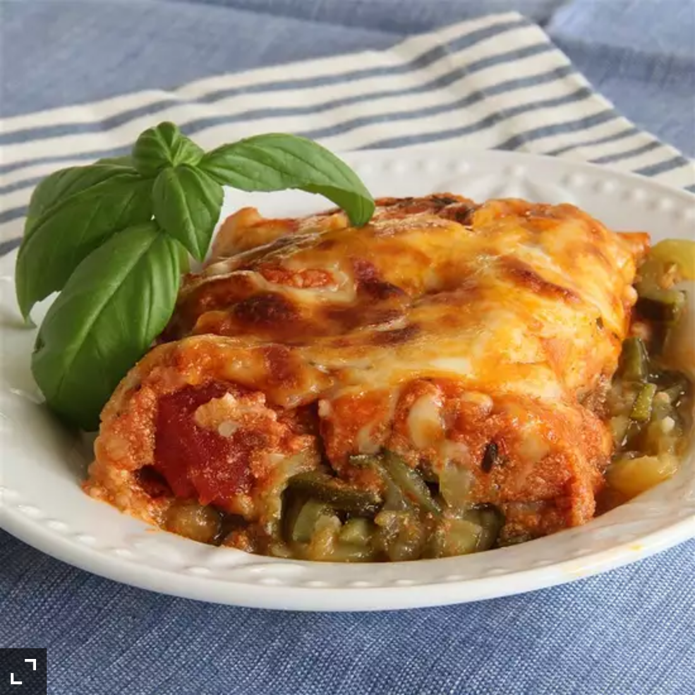

Zucchini Noodle Casserole

Description
Ingredients
- 3 tablespoons olive oil, divided, or as needed
- 5 zucchini squash, cut into 'noodles' using a spiral slicer or vegetable peeler
- 1/4 cup minced garlic
- 1 (16 ounce) jar marinara sauce, or to taste
- 1 (7 ounce) container Greek yogurt
- 1 pinch Italian seasoning, or to taste
- salt and ground black pepper to taste
- 1/2 cup shredded mozzarella cheese
Steps
- Preheat oven to 425 degrees F (220 degrees C).
- Heat 1 tablespoon oil in a large skillet over medium-high heat.
Working in batches, saute enough zucchini to fit in the skillet with 1
teaspoon garlic until zucchini is slightly browned and softened, 3 to 6 minutes.
Repeat with remaining olive oil, zucchini, and garlic. Transfer cooked zucchini mixture to a 9x13-inch baking dish.
- Whisk marinara sauce, yogurt, Italian seasoning, salt, and black pepper together in a saucepan over low heat;
cook and stir until sauce is warmed through, 5 to 10 minutes. Pour sauce over zucchini mixture in the baking dish.
Sprinkle mozzarella cheese and a pinch of Italian seasoning over the top.
- Bake in the preheated oven until cheese is bubbling, 20 to 30 minutes.
Back